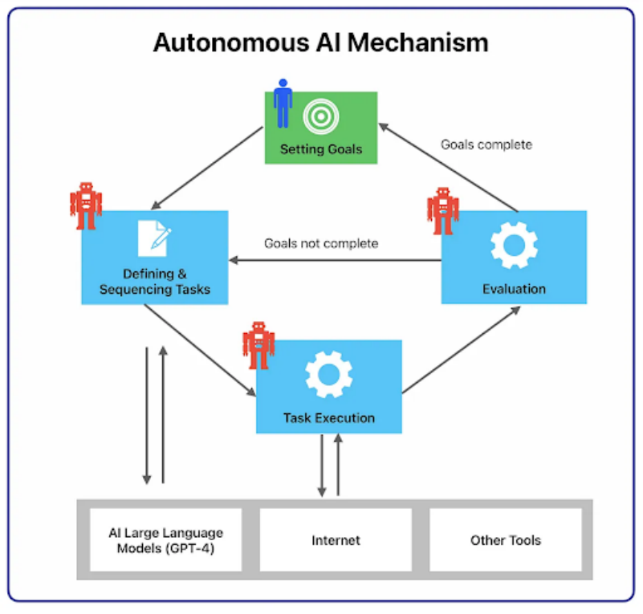

AutoGPT
在 Agent 技术的发展过程中，一个重要的探索方向是：让 AI 能够自主完成复杂任务，而不是只对用户 输入做一次性回应。传统的大语言模型通常是“被动式”的，用户输入问题，模型生成答案，然后交 互结束。但在很多真实场景中，任务往往需要 多轮推理、信息收集以及持续执行，这就需要一种能够 自主规划任务流程的 Agent 系统。
在这种背景下，AutoGPT 诞生。AutoGPT 是早期最具代表性的 Autonomous Agent（自主智能体） 框架之一，它的核心目标是让 AI 在给定目标的情况下，自主规划步骤并持续执行任务。

与传统 Agent 不同，AutoGPT 的设计理念是：
用户只需要给出目标，AI 会自动思考并完成任务。
例如，用户可以提出一个目标：
- “分析当前 AI 创业趋势，并生成一份创业建议报告。”
AutoGPT 可能会执行如下过程：
-
拆解任务目标
-
搜索互联网获取信息
-
总结分析内容
-
生成报告结构
-
继续补充细节
-
输出完整文档
在整个过程中，用户并不需要持续干预，Agent 会不断 自我规划并执行任务。
AutoGPT 架构
AutoGPT 的系统结构通常由几个核心模块组成：
Goal（目标）
用户首先为 Agent 设定一个或多个目标。这个目标通常是一个较高层次的任务，例如：
-
写一篇行业分析报告
-
设计一个创业方案
-
收集某个领域的研究资料
Agent 会围绕这个目标持续执行任务。
Task Planning（任务规划）
当 Agent 接收到目标后，大语言模型会首先进行 任务拆解，将一个复杂目标分解为多个子任务。例 如：
目标：写 AI 创业报告
可能拆解为：
-
收集行业信息
-
分析市场趋势
-
总结商业机会
-
生成报告结构
-
撰写完整内容
这种任务拆解能力是 AutoGPT 的核心之一。
Memory（记忆系统）
AutoGPT 通常包含短期记忆与长期记忆两种机制：
短期记忆用于保存当前任务上下文
长期记忆通常使用向量数据库，用于存储历史信息
通过记忆系统，Agent 可以在多次推理过程中保持上下文一致性。
Tool Use（工具调用）
为了完成复杂任务，AutoGPT 可以调用外部工具，例如：
-
Web 搜索
-
文件读写
-
API 调用
-
代码执行
这些工具使 Agent 能够访问实时数据并执行计算任务。
Action Loop（行动循环）
AutoGPT 的执行通常采用 循环推理机制：
思考
↓
制定下一步行动 ↓
执行行动 ↓ 观察结果 ↓ 继续思考
这个循环会不断进行，直到 Agent 认为任务已经完成。 这种机制通常被称为：
Thought → Action → Observation 循环
通过这种方式，Agent 可以逐步逼近目标。
Autonomous Agent
AutoGPT 最核心的理念就是 Autonomous Agent（自主智能体）。 所谓自主智能体，是指 AI 系统具备以下能力：
目标驱动
系统不是被动回应，而是围绕目标持续执行任务。
自主规划
Agent 可以自己决定下一步应该做什么，而不是完全依赖用户指令。
持续执行
Agent 可以执行多个步骤，而不是一次性输出结果。
自我修正
如果任务执行失败，Agent 可以重新规划步骤。
例如，一个 Autonomous Agent 在执行研究任务时，可能会表现出如下行为：
首先搜索资料
然后总结关键内容
发现信息不足后再次搜索
最终整理成完整报告
整个过程类似一个 自动研究助手。
AutoGPT 的局限
虽然 AutoGPT 在 Agent 发展历史中具有重要意义，但在实际工程应用中也暴露出一些问题。 首先是 执行成本较高。由于 AutoGPT 需要不断进行推理循环，因此会消耗大量 Token 和计算资源。 其次是 任务稳定性问题。在复杂任务中，Agent 有时会出现推理偏离目标的情况，导致执行效率降 低。
另外，AutoGPT 的执行过程往往较难控制，开发者很难精确限制 Agent 的行为范围。 正因为这些问题，后来的 Agent 框架开始逐渐转向 更加可控的工作流式设计，例如 LangGraph 或 Multi-Agent 系统。
总体来看，AutoGPT 是 Agent 领域一次非常重要的探索，它首次展示了 完全自主的 AI Agent 系统形 态。尽管在工程实践中存在一定局限，但 AutoGPT 提出的 Autonomous Agent 概念对后续的 Agent 研究产生了深远影响。